<title>Calendario a la vista, montado</title>
<meta name="claude:viewport-fit-sides" content="cover">
<link rel="preconnect" href="https://fonts.googleapis.com">
<link rel="preconnect" href="https://fonts.gstatic.com" crossorigin>
<link rel="stylesheet" href="https://fonts.googleapis.com/css2?family=EB+Garamond:ital,wght@0,400;0,500;1,400&family=Inter+Tight:wght@400;500;600&display=swap">
<style>
/* Una columna de papel y tinta, como las páginas «Montado»: lo elegido, las fotos de la app de
   verdad (genera.js) y lo que falta, que es mirarlo en un iPhone. */
:root{
  --paper:#F2EDE0;--card:#FBF8F1;
  --ink:#1F1C17;--ink-2:#4A453C;--ink-3:#77705F;
  --line:#C9C0A8;
  --olive:#3E5A3A;--olive-soft:rgba(62,90,58,.12);
  --terra:#A85E43;--terra-soft:rgba(168,94,67,.12);
  --display:'EB Garamond',Georgia,'Times New Roman',serif;
  --ui:'Inter Tight',system-ui,-apple-system,'Segoe UI',sans-serif;
}
@media (prefers-color-scheme: dark){:root:not([data-theme="light"]){
  --paper:#1d1a14;--card:#2c271f;--ink:#EDE5D3;--ink-2:#c0b49e;--ink-3:#B2A995;--line:#4d4536;
  --olive:#98B58B;--olive-soft:rgba(122,154,109,.16);--terra:#E8A98F;--terra-soft:rgba(232,169,143,.14);color-scheme:dark;
}}
:root[data-theme="dark"]{
  --paper:#1d1a14;--card:#2c271f;--ink:#EDE5D3;--ink-2:#c0b49e;--ink-3:#B2A995;--line:#4d4536;
  --olive:#98B58B;--olive-soft:rgba(122,154,109,.16);--terra:#E8A98F;--terra-soft:rgba(232,169,143,.14);color-scheme:dark;
}
*{box-sizing:border-box}
body{margin:0;background:var(--paper);color:var(--ink);font-family:var(--ui);font-size:16px;line-height:1.55;-webkit-text-size-adjust:100%}
main{max-width:880px;margin:0 auto;padding-left:max(16px,env(safe-area-inset-left,0px));padding-right:max(16px,env(safe-area-inset-right,0px));padding-block:40px 72px}
h1,h2,h3{font-family:var(--display);font-style:italic;font-weight:400;line-height:1.15;margin:0;text-wrap:balance}
h1{font-size:clamp(32px,6vw,44px)}
h2{font-size:clamp(23px,4vw,28px);margin:44px 0 10px;padding-top:22px;border-top:1px solid var(--line)}
p,li{color:var(--ink-2);max-width:68ch}
p{margin:0 0 12px}
ul,ol{margin:0 0 14px;padding-left:22px}
li{margin-bottom:6px}
strong{color:var(--ink);font-weight:500}
code{font-size:13px;background:var(--card);border:1px solid var(--line);border-radius:4px;padding:0 4px;overflow-wrap:anywhere}
a{color:var(--olive)}
.eyebrow{font-size:12px;letter-spacing:.14em;text-transform:uppercase;color:var(--ink-3);margin-bottom:10px}
.lead{font-family:var(--display);font-size:21px;color:var(--ink);max-width:62ch;margin-top:14px}
.montado{background:var(--olive-soft);border-radius:10px;padding:12px 16px;margin:18px 0 0;color:var(--ink);max-width:68ch}
.falta{background:var(--terra-soft);border-radius:10px;padding:12px 16px;margin:14px 0;color:var(--ink);max-width:68ch}
.nota{font-size:13px;color:var(--ink-3)}
.fotos{display:grid;gap:14px;grid-template-columns:minmax(0,2.3fr) minmax(0,1fr);align-items:start;margin:14px 0}
.fotos.movil{grid-template-columns:repeat(auto-fit,minmax(150px,1fr));max-width:720px}
.fotos.ancha{grid-template-columns:minmax(0,1fr) minmax(0,1fr)}
@media (max-width:640px){.fotos,.fotos.ancha{grid-template-columns:1fr}.fotos.movil{grid-template-columns:repeat(2,minmax(0,1fr))}}
figure{margin:0;min-width:0}
figure img{display:block;width:100%;height:auto;border:1px solid var(--line);border-radius:6px}
figcaption{font-size:13px;color:var(--ink-3);margin-top:6px}
.tabla{overflow-x:auto;margin:14px 0;border:1px solid var(--line);border-radius:10px;background:var(--card)}
table{border-collapse:collapse;width:100%;font-size:14px;font-variant-numeric:tabular-nums}
th,td{text-align:left;vertical-align:top;padding:9px 12px;border-bottom:1px solid var(--line)}
tr:last-child td{border-bottom:none}
th{font-size:12px;letter-spacing:.08em;text-transform:uppercase;color:var(--ink-3);font-weight:500}
td{color:var(--ink-2)}
td b{color:var(--ink);font-weight:500}
</style>

<main>
  <div class="eyebrow">PACE · el calendario a la vista · montado el 17 nov. 2026</div>
  <h1>El calendario a la vista, montado</h1>
  <p class="lead">Elegiste «Al calendario todo A». Ya está montado: el enlace en la tarjeta, la hoja de la primera vez, la web sin las altas y el calendario del iPhone.</p>
  <p class="montado"><strong>En la rama</strong> <code>claude/calendario-vista-16nov-ee4f9e</code>, en tres pasos, cada uno con su prueba, y al día con <code>main</code>. Falta tu «júntalo» y mirarlo en un iPhone (los pasos, en <a href="https://claude.ai/artifact/2EAPL7yGYG9QihGWEQaD1E">su página</a>).</p>

  <h2>1 · «Al calendario» en la tarjeta</h2>
  <p>En el ordenador, delante de «Ajustar el horario». En el móvil, al final de la línea del día. Cuando ya está conectado dice «Calendario conectado» (en el móvil, «Conectado»).</p>
  <div class="fotos">
    <figure>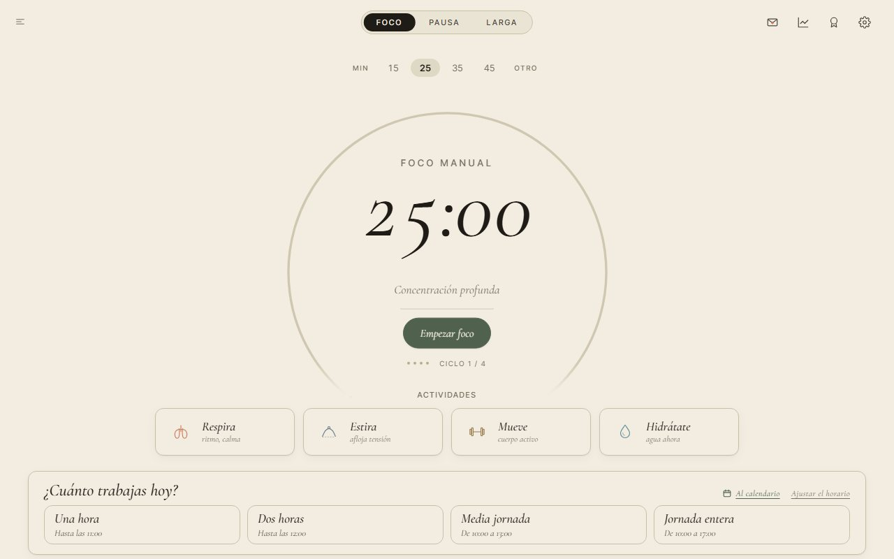<figcaption><b>1280 × 800</b></figcaption></figure>
    <figure>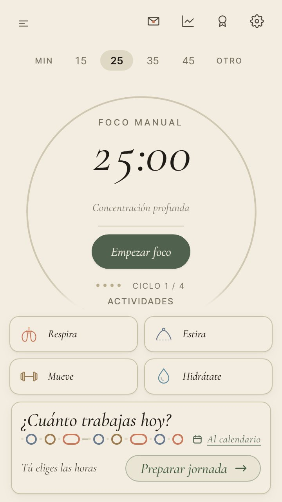<figcaption><b>360 × 640</b></figcaption></figure>
  </div>
  <div class="fotos movil">
    <figure>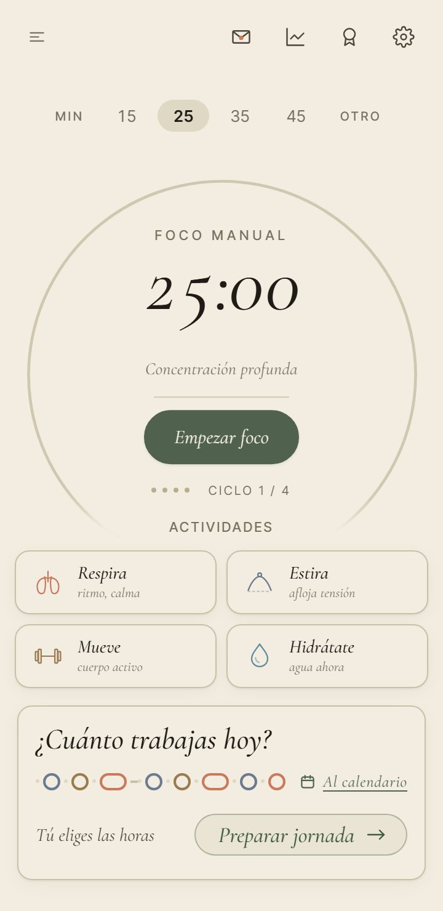<figcaption>360 × 740</figcaption></figure>
    <figure>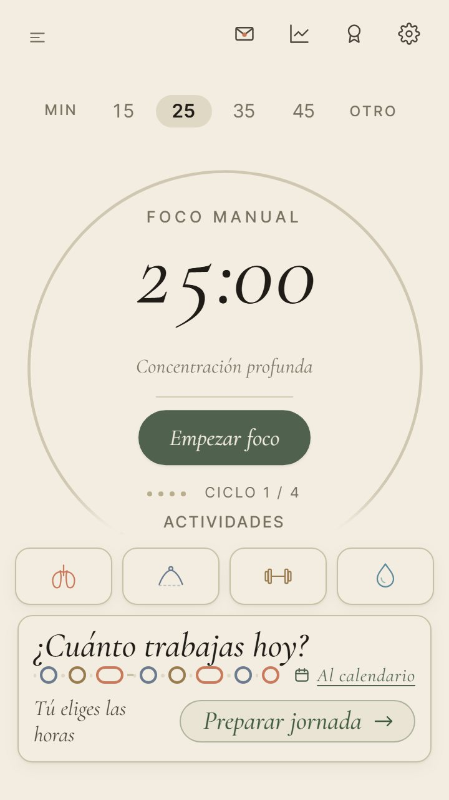<figcaption>Letra al 115 %</figcaption></figure>
    <figure>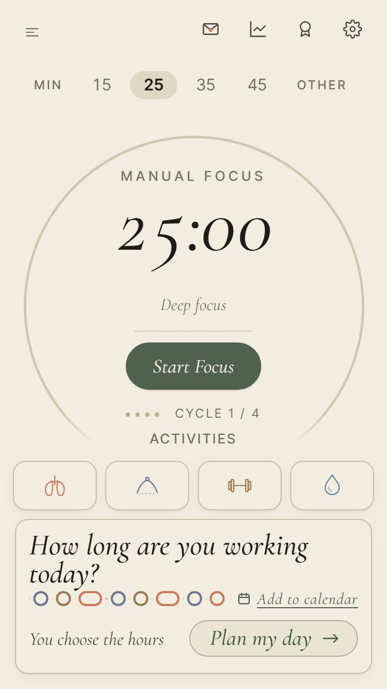<figcaption>En inglés, al 115 %</figcaption></figure>
    <figure>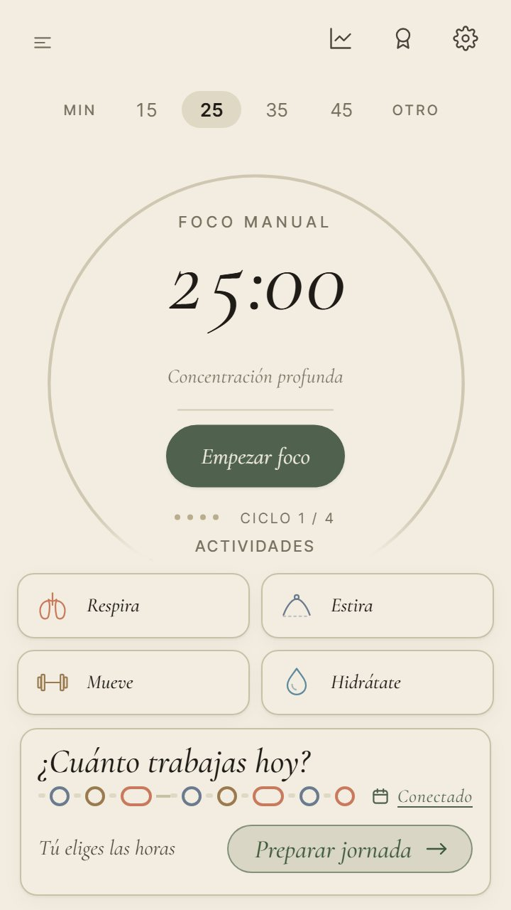<figcaption>Ya conectado</figcaption></figure>
  </div>
  <div class="tabla"><table>
    <tr><th>Medido</th><th>1280 × 800</th><th>1536 × 710</th><th>360 × 640</th><th>360 × 740</th><th>640 al 115 %</th><th>En inglés al 115 %</th></tr>
    <tr><td><b>Scroll de la home</b></td><td>ninguno</td><td>ninguno</td><td>ninguno</td><td>ninguno</td><td>ninguno</td><td>ninguno</td></tr>
    <tr><td><b>Aro</b></td><td>479, como antes</td><td>372, como antes</td><td>307, como antes</td><td>331, como antes</td><td>igual</td><td>igual</td></tr>
  </table></div>
  <p class="nota">El enlace no pisa nada ni se sale de la tarjeta en ninguna. La tarjeta mide lo mismo con el enlace que sin él: lo vigila una prueba nueva, y la home sin scroll, la de siempre (también en el motor de Safari).</p>

  <h2>2 · La primera vez: la hoja, sin día</h2>
  <p>Tocar «Al calendario» antes de elegir abre «Tu día en el calendario». «Conectar» da el permiso, lee tus reuniones de hoy (para que las opciones ya las rodeen) y deja «Mantenerlo al día solo» encendido. Al elegir cuánto trabajas, tu día llega solo en un minuto.</p>
  <div class="fotos movil">
    <figure>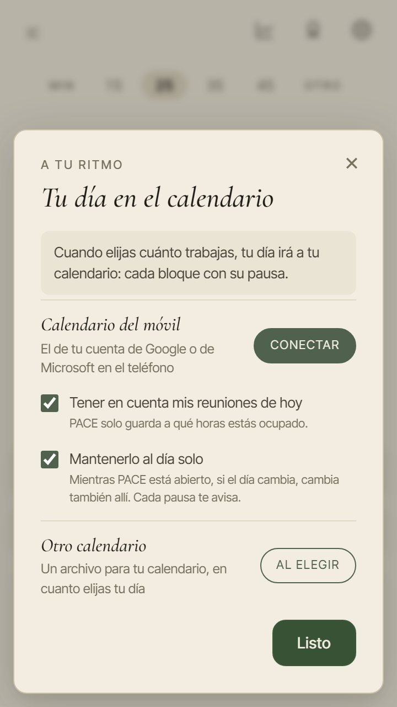<figcaption><b>Android</b></figcaption></figure>
    <figure>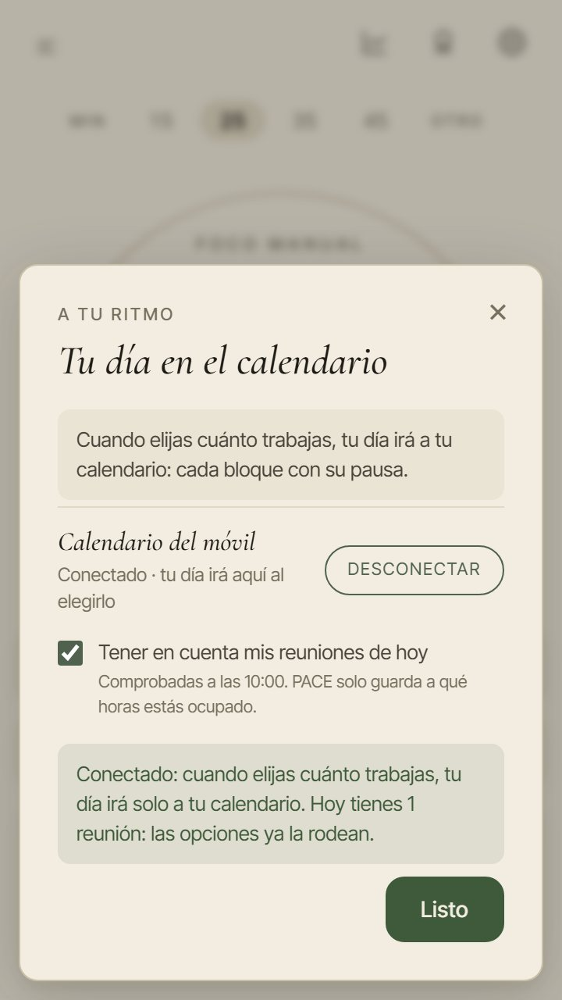<figcaption><b>Tras «Conectar»</b>, con una reunión de 12:00 a 13:00</figcaption></figure>
  </div>
  <div class="fotos ancha">
    <figure>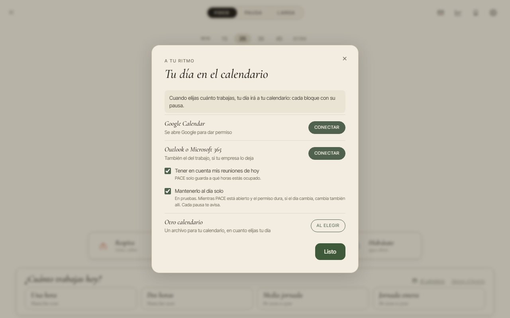<figcaption><b>La web, con tus altas</b> · «Mantenerlo al día solo» en pruebas</figcaption></figure>
  </div>

  <h2>3 · La web sin las altas</h2>
  <p>Sin las altas de Google y Microsoft solo hay archivo, y la hoja lo dice sin prometer nada más. «Al elegir» apunta que lo quieres, y el archivo se descarga en cuanto tocas cuánto trabajas. «Cancelar» lo deshace.</p>
  <div class="fotos ancha">
    <figure>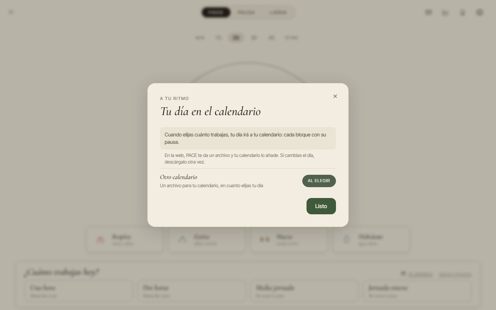<figcaption><b>Al abrirla</b></figcaption></figure>
    <figure>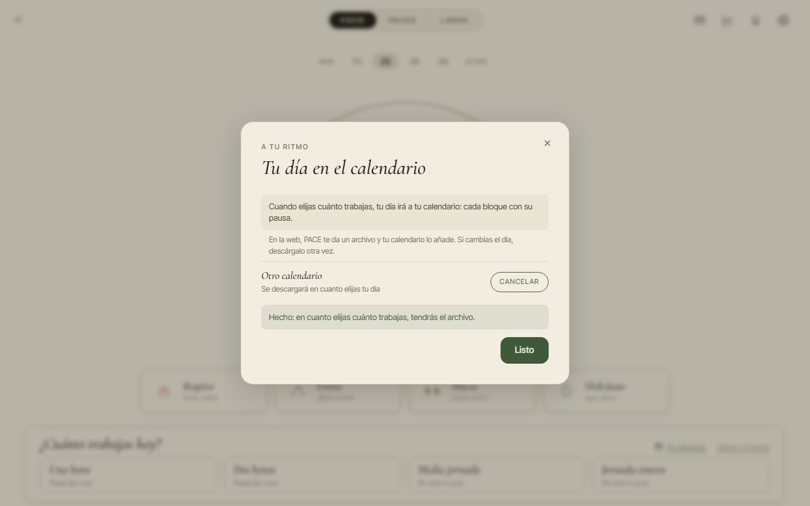<figcaption><b>Tras «Al elegir»</b></figcaption></figure>
  </div>

  <h2>4 · El calendario del iPhone</h2>
  <p>Como en Android: «Calendario del iPhone» con «Conectar», el permiso completo, tus reuniones y «Mantenerlo al día solo». Si no das el permiso, PACE lo dice, te manda a Ajustes del iPhone y sigue ofreciendo el archivo.</p>
  <div class="fotos movil">
    <figure>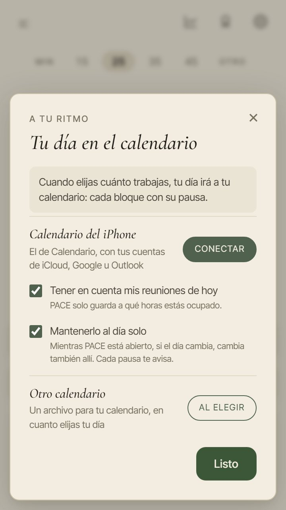<figcaption><b>iPhone</b> · con el iPhone fingido, como en las pruebas</figcaption></figure>
    <figure><figcaption><b>Tras «Conectar»</b></figcaption></figure>
    <figure><figcaption>Ya conectado</figcaption></figure>
  </div>
  <p><strong>La pregunta de iOS</strong> dice: «PACE lee a qué horas tienes reuniones para poner tus pausas alrededor, y añade tu día a tu calendario. No guarda títulos ni personas.» En inglés, con el iPhone en inglés.</p>
  <p><strong>Una diferencia, ya contada en la privacidad:</strong> en el iPhone, lo de PACE va como libre, pero no como privado, porque el iPhone no deja marcarlo. Quien vea tu calendario compartido lee qué pausa es.</p>
  <p class="falta"><strong>Sin compilar aquí:</strong> en Windows no se compila la app del iPhone. GitHub la compila al juntar con <code>main</code>. Lo que solo se ve en un iPhone de verdad (la pregunta, los eventos en Calendario, el aviso de cada pausa) está en <a href="https://claude.ai/artifact/2EAPL7yGYG9QihGWEQaD1E">los pasos para probarlo</a>.</p>

  <h2>Lo que lo vigila</h2>
  <ul>
    <li><strong>Pruebas nuevas</strong>: <code>tests/ritmo-calendario-tarjeta.spec.js</code> (el enlace sin alto, la hoja sin día, la web con y sin altas, y el recorrido entero en Android hasta que el día está en el calendario esquivando la reunión) y <code>tests/ios-calendario.safari.spec.js</code> (el iPhone, en los dos motores, con la copia de otro iPhone y su control). Cada una vista caer con fallos puestos a propósito: once en total.</li>
    <li><strong>verify</strong>: el complemento del iPhone en su lista, las dos frases del permiso en castellano y en inglés dentro de la app, la pieza propia registrada, que toda lectura del calendario del móvil (también en el iPhone) mire antes si la lista es de ese teléfono, y que la privacidad diga lo del iPhone.</li>
    <li><strong>Vecinas</strong>: 116 tras el paso 1, 59 tras el 2 y 94 tras el 3, con un solo worker; <code>verify</code> en verde en cada paso. Al ponerse al día con <code>main</code>, 134: 130 a la primera y 4 de la home sin scroll que, con la máquina cargada, se pasaron del minuto y solas pasan.</li>
  </ul>
  <p class="nota">Fotos: <code>node docs/proposals/calendario-montado-17nov/genera.js</code> sobre el <code>index.html</code> compilado; lo medido, en <code>medidas.json</code>. La propuesta que elegiste: <a href="https://claude.ai/artifact/4zshTmpdDLf65xYxHTk6se">El calendario a la vista</a>.</p>
</main>
